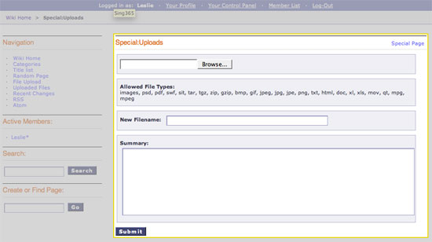

Wiki Template, Special Upload Section
This section displays the wiki's upload form as outlined below:

In addition to the variables in the Wiki Page section, the Special Single File section has:
Single Variables
file_types
{file_types}
This displays the allowed file types that can be uploaded. The value is determined by the settings of the File Upload Directory that the wiki is using, which is set from the Wiki's Control Panel.
Conditional Variables
if file_types
{if file_types == 'images'}
This checks to see if the Upload Directory specified in the Wiki's Control Panel allows only images to be uploaded. This is used in combination with the {file_types} variable to display what kind of files can be uploaded. Please see the default theme file for an example (search for {if file_types == 'images'}).
Form Variables
form_declaration:wiki:uploads
{form_declaration:wiki:uploads}
This creates the opening <form> tag and hidden fields needed for the upload form.